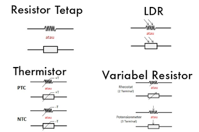
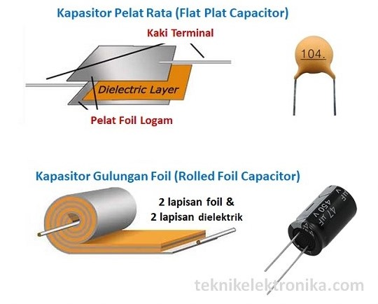
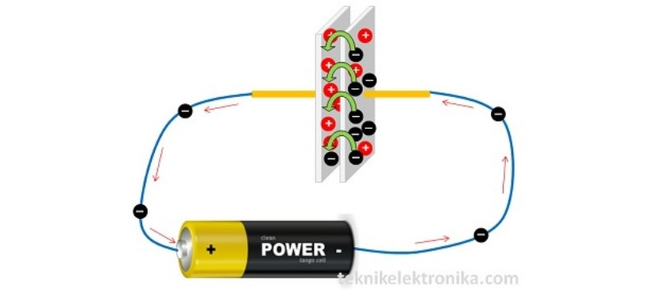

Pengertian
Kapasitor (Capacitor) atau disebut juga dengan Kondensator (Condensator) adalah Komponen Elektronika Pasif yang dapat menyimpan muatan listrik dalam waktu sementara dengan satuan kapasitansinya adalah Farad. Satuan Kapasitor tersebut diambil dari nama penemunya yaitu Michael Faraday (1791 ~ 1867) yang berasal dari Inggris. Namun Farad adalah satuan yang sangat besar, oleh karena itu pada umumnya Kapasitor yang digunakan dalam peralatan Elektronika adalah satuan Farad yang dikecilkan menjadi pikoFarad, NanoFarad dan MicroFarad.
Kapasitor merupakan Komponen Elektronika yang terdiri dari 2 pelat konduktor yang pada umumnya adalah terbuat dari logam dan sebuah Isolator diantaranya sebagai pemisah. Dalam Rangkaian Elektronika, Kapasitor disingkat dengan huruf “C”.
Fungsi Kapasitor
Pada Peralatan Elektronika, Kapasitor merupakan salah satu jenis Komponen Elektronika yang paling sering digunakan. Hal ini dikarenakan Kapasitor memiliki banyak fungsi sehingga hampir setiap Rangkaian Elektronika memerlukannya.
Struktur Dasar Kapasitor
Sebuah Kapasitor yang sederhana pada dasarnya terdiri dari dua keping pelat paralel yang dipisahkan oleh daerah non-konduktif. Daerah non-konduktor ini biasanya menggunakan bahan yang pada umumnya disebut dengan bahan dielektrik. Yang dimaksud dengan “Bahan Dielektrik” adalah sejenis bahan isolator listrik yang dapat dipolarisasikan atau dikutubkan (polarized) dengan cara ditempatkannya ke dalam medan listrik. Bila bahan Dielektrik ditempatkan di medan listrik, muatan listrik tidak mengalir melalui bahan tersebut seperti pada bahan konduktor, namun hanya sedikit bergeser dari rata-rata posisi setimbangnya (equilibrium positions) sehingga menyebabkan polarisasi yang disebut dengan “polarisasi dielektrik”.
Secara komersil, bahan-bahan dielektrik pada kapasitor dapat berupa kertas, film plastik, mika, kaca, keramik dan udara. Sementara pelat yang digunakan kapasitor dapat berupa cakram aluminium, aluminium foil ataupun lapisan tipis logam yang dipasangkan secara berlawanan sisi dengan dielektrik padat. Lapisan konduktor – dielektrik – konduktor biasanya digulung menjadi bentuk silinder ataupun dibiarkan rata.
Cara Kerja Kapasitor
Bila kedua pelat dihubungkan ke sumber tegangan DC atau tegangan searah (misalnya Baterai), Elektron “didorong” ke satu pelat oleh terminal negatif baterai, sementara elektron “ditarik” dari pelat lain oleh terminal positif baterai. Jika perbedaan muatan antara kedua pelat tersebut terlalu besar, maka akan terjadi percikan (spark) yang melompati celah diantara kedua pelat tersebut dan membuang muatan yang tersimpan (discharge). Untuk meningkatkan jumlah muatan pada pelat, bahan dielektrik yang berupa non-konduktif (isolator) ditempatkan diantara kedua pelat tersebut. Fungsi dielektrik tersebut dalam kapasitor adalah sebagai “pemblokir percikan” atau “spark blocker” yang bermanfaat untuk dapat meningkatkan kapasitas muatan kapasitor.
Nilai kapasitansi atau kapasitas muatan kapasitor ini juga tergantung pada bahan dielektrik yang digunakannya. Jika konstanta bahan dielektrik atau permitivitas bahannya bernilai besar maka nilai kapasitansinya juga akan menjadi besar. Faktor-faktor lain yang dapat mempengaruhi tingkat kapasitansi kapasitor adalah luas daerah permukaan kepingan pelat dan jarak antara pelat paralel tersebut. Semakin luas kepingan pelat-pelatnya, semakin besar pula nilai kapasitansinya. Namun nilai kapasitansi ini berbanding terbalik dengan jarak antara kepingan pelat-pelatnya. Semakin dekat jarak antara kedua pelatnya, semakin besar pula nilai kapasitansinya.
Jenis-Jenis Kapasitor
Berdasarkan bahan Isolator dan nilainya, Kapasitor dapat dibagi menjadi 2 Jenis yaitu Kapasitor Nilai Tetap dan Kapasitor Variabel. Berikut ini adalah penjelasan singkatnya untuk masing-masing jenis Kapasitor :
Kapasitor Nilai Tetap atau Fixed Capacitor adalah Kapasitor yang nilainya konstan atau tidak berubah-ubah.
Kapasitor Variabel adalah Kapasitor yang nilai Kapasitansinya dapat diatur atau berubah-ubah.